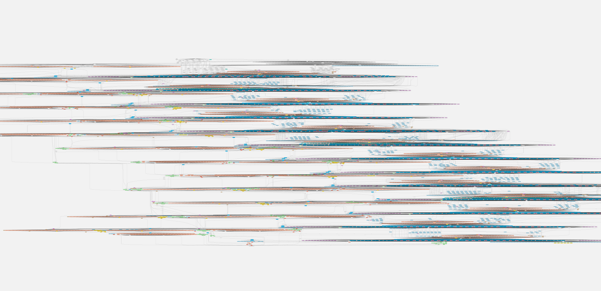

Cylc 8 Project Report
UM Workshop Nov 2020
Hilary Oliver, NIWA
- recap: why Cylc 8?
- what's not changing?
- what is changing?
- when?
why is cylc
changing?



what's not
changing?
- no barrier between cycles
(our original raison d'etre) - support for Cylc 7
suite.rc
(with deprecations) - support for Cylc 7 CLI syntax
(with deprecations) - ~all user-facing Cylc 7 functionality (supported by tests)
what IS
changing?
what's changing (1/4)
- new architecture:
- components:Hub, web UI, UI Server, Scheduler, CLI
- network: Protobuf, ZeroMQ, GraphQL, WebSocket
- web UI
- integrated "gscan"
- separation of task and job states
(and fewer states, without loss of information) - responsive web design: from desktop to mobile
- shared datastore and incremental update
what's changing (2/4)
- new "spawn on demand" scheduler
- much more efficient and scalable
- no suicide triggers for path branching
- no implicit prev-instance submit dependence
- allows a better "window on the workflow"
- no leakage of internal implementation
what's changing (3/4)
-
rose suite-run+migrated to Cylc- platforms support
- suite install (src to run-dir; job hosts)
- safe suite run semantics
- play, pause, resume (and reflow)
- new run-dir for each new install/run
- terminology and filenames
- suite -> (work)flow
-
suite.rc->flow.cylc
what's changing (4/4)
- authentication (user and job)
- fine-grained authorization
- migration to Python 3
- code management: 6+ repositories (was 1)
- packaging:
conda install cylc - cylc plugins
- documentation (arggh)
- ...
Cylc web UI
& Cylc TUI